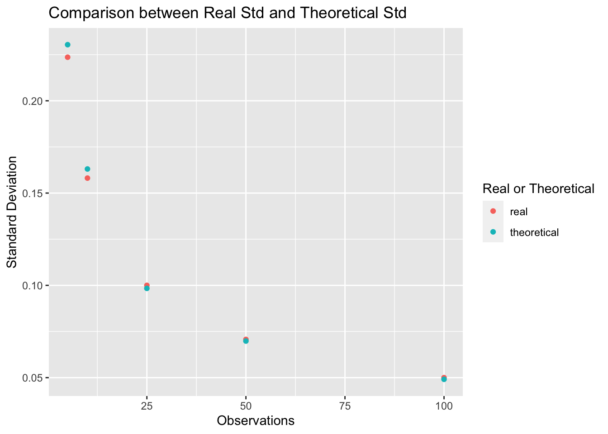

Chapter 3 Homework 3
3.1 Problem 1 CDFs and PDFs
3.1.1 Part A
The CDF’s plot shows above. X is the event, and Y-axis shows the cumulative probability.
We can conclude that:
\[ P(2< X ≤ 4.5) = P(X = 3) = 0.1 \]
\[ P(2 ≤ X < 4.5) = P(X = {2,3}) = 0.1 + 0.1 = 0.2. \]
3.1.2 Part B
3.1.2.1 (i)
\[ P(X^2 ≤ 0.25) = P (X ≤ \sqrt{0.25}) = P(X≤ 0.5) \]
Since it follows a uniform distribution, then by the formula
\[ P(X≤ 0.5) = \frac{0.5-0}{1-0} = 0.5 \]
3.1.2.2 (ii)
We have to make clear that 0 < a < 1, otherwise it will fail to get a probability.
\[ P(X^2 ≤ a) = P (X ≤ \sqrt{a}) = \frac{\sqrt{a}-0}{1-0} = \sqrt{a} \]
3.1.2.3 (iii)
From part (ii), we know that
\[ P(Y≤ y) = P(X^2 ≤ y) = P (X ≤ \sqrt{y}) = \frac{\sqrt{y}-0}{1-0} = \sqrt{y} \]
So the CDF of Y is:
\[ F(y) = \sqrt{y} \]
And then take first-order derivatives to PDF:
\[ f_y(y) = \frac{d(\sqrt{y})}{dy} = \frac{1}{2(\sqrt{y})} \]
3.1.2.4 (iiii)
Compute E(Y):
\[ E(Y) = \int_{0}^{1} yf(y)dy = \int_{0}^{1} \frac{y}{2(\sqrt{y})}dy =\int_{0}^{1} \frac{\sqrt{y}}{2}dy = \frac{1}{3}*(1)^\frac{3}{2} - 0 = \frac{1}{3} \]
In order to compute var(Y), we need to calculate E(Y^2) first.
Compute E(Y^2):
\[ E(Y^2) = \int_{0}^{1} y^2f(y)dy = \int_{0}^{1} \frac{y^2}{2(\sqrt{y})}dy =\int_{0}^{1} \frac{\sqrt{y^3}}{2}dy = \frac{1}{5}*(1)^\frac{5}{2} - 0 = \frac{1}{5} \]
Thus, the var(Y) = E(Y^2) - E(Y)^2 as follow:
\[ var(Y) = E(Y^2)- E(Y)^2 = \frac{1}{5} - (\frac{1}{3})^2 = \frac{4}{45} \]
3.2 Problem 2 Practice with Expected Value
3.2.1 Part A
We are trying to get E(X):
\[ E(X) = E(Z_1^2+Z_2^2...+Z_d^2) = E(Z_1^2)+E(Z_2^2)+...+E(Z_d^2) \] Since Z_1 to Z_d are all follows the same distribution, we have:
\[ E(Z_1^2) = E(Z_2^2) = ... = E(Z_d^2) \]
Thus, as long as we get E(Z_i^2), we are done. So the E(Z_i^2):
\[ E(Z_i^2) = Var(Z_i) + E(Z_i)^2 = 1 + 0^2 = 1 \]
The we can get E(X):
\[ E(X) =E(Z_1^2)+E(Z_2^2)+...+E(Z_d^2) = \sum_{i = 1}^{d} 1 = d \]
3.2.2 Part B
I do not agree with that, because average velocity does not take into account the time spent at different velocities during the entire journey.
Therefore, if we want to figure out the average time, we should calculate the time for walking and biking separately, and then take weighted average of them.
Thus, the time for walking should be:
\[ T(walking) = Distance/Velocity(walking) =2(miles)/5(miles/hour) = 0.4 hour \]
And the time for biking should be:
\[ T(biking) = Distance/Velocity(biking) =2(miles)/10(miles/hour) = 0.2 hour \]
And the add in the probabilities of two situations, we have:
\[ T = w(walking)*T(walking) + w(biking)*T(biking) \\= 0.4*0.4 + 0.6*0.2 = 0.16 +0.12 = 0.28 hour = 16.8 minutes \]
Thus, Markov takes average 0.28 hour, or 16.8 minutes, to get to the class.
3.3 Problem 3 Inverse CDF
We can calculate the P(X<x) first:
\[ P(X≤x) = P(F^{-1}(U)≤x) = P(F(F^{-1}(U))≤F(x)) = P(U≤F(x)) = F(x) \] Then once we get the CDF, we can get the PDF of it.
\[ f(x) = F'(x) \]
Let’s look at the detailed case here (0≤u≤1):
\[ F(u) = P(U≤u) = \frac {u-0}{1-0} = u \]
The plot as followed:
Since X = F^-1(U), we can see from the picture X and U are identical and all a uniform distribution on [0,1]. Thus, we can conclude that the pdf of f(x) equals to of f(u) as followed (0≤x≤1):
\[ f(x) = \frac {1}{1-0} = 1 \]
The plot shows as followed:
3.4 Problem 4 Simulation
3.4.1 Part A
The expected value for pn shows below:
\[ E(\hat{p_N}) = E(\frac{X_N}{N}) = \frac{E(X_N)}{N} = \frac{NP}{N} = P \]
The standard deviation for pn shows below:
\[ sd(\hat{p_N}) = \sqrt {(var(\hat{p_N}))} = \sqrt {var(\frac{X_N}{N})}_ = \sqrt {\frac{var(X_N)}{N^2}} = \sqrt \frac{NP(1-P)}{N^2} = \sqrt{\frac {P-P^2}{N}} \]
3.4.2 Part B
If we put N=5, P=0.5 in formula E(P_N) and sd(P_N), we can get：
Probability for N=5:
## [1] 0.5Standard deviation for N=5:
## [1] 0.2236Then we use randomly simulate 1000 times, we can get Monte Carlo Mean:
## [1] 0.4962Monte Carlo Standard Deviation:
## [1] 0.2249From the results above, we can find Monte Carlo Mean is very close to theoretical mean, and of cause, Monte Carlo standard deviation basically agrees with the theoretical standard deviation.
Repeat the same process for p10, p25, p50, p100, and make the plot as required below:

Caption: X-axis stands for the observation times in an experiment, noted as N; Y-axis represents the value of standard deviation. Besides, orange points mean the real value from experiments, and blue points are the theoretical value calculated be the formula in Part (A).
Comments: From the plot above, we can see that, as the observations(N) of experiment increase more and more, the standard deviation become less and less, which matches the standard deviation formula in part (A).
In addition to that, I can find that, as the observations(N) of each experiment increase, the real standard deviations are more close to the theoretical standard deviations.It complies large number theorem.
3.5 Problem 5 More PDF/CDF Practice
The CDF of X_i(i=1,2,…,N) as given:
\[ F_{X_i}(x) = P(X_i≤x) = \int_{0}^{x} \lambda e^{-\lambda t}dt = 1- e^{-\lambda x} \]
Since max{X_i(i=1,2,…,N)}) < y is equivalent to X_i < y for any i, then we have:
\[ F_{Y_N}(y) = P(Y_N < y) \\= P(max(X_1,X_2...X_N)<y) \\= P(X_1<y,X_2<y,X_3<y...X_N<y) \]
And then because X itself is independent, then we have:
\[ P(X_1<y,X_2<y,X_3<y...X_N<y) \\= P(X_1<y) *P(X_2<y) *...*P(X_N<y) \\= F_{X_1}(y)*F_{X_2}(y)*...*F_{X_N}(y) \\= (1- e^{-\lambda y})^N \] Then, differentiate the CDF of Y_N, we can get the PDF of Y_N:
\[ f_{Y_N} = \frac {dF_{Y_N}(y)}{dy} = \frac {d}{dy}(1-e^{\lambda y})^N = N(1-e^{\lambda y})^{N-1}*(-e^{-\lambda y})*-\lambda = N\lambda e^{-\lambda y}(1-e^{-\lambda y})^{N-1} \]